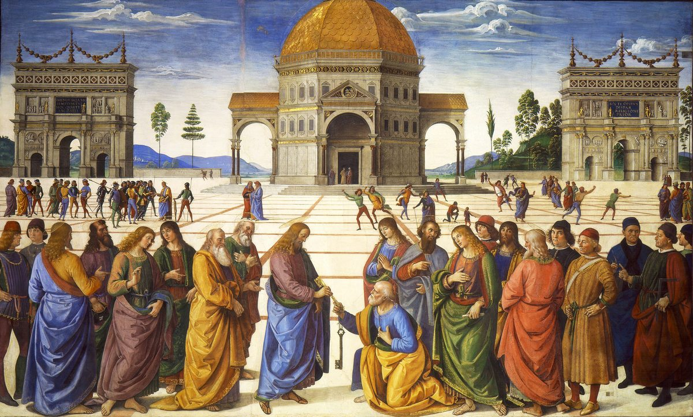

Matthew 16 — The Mister Translation

Perugino paints the temple behind Christ and Peter as an octagonal, centrally-planned Renaissance building — nothing like anything that stood in first-century Judea, and nothing a first-century reader would have pictured on hearing ‘I will build my congregation.’ The dictionary’s own point about ekklēsia is that the word named no building at all; fourteen centuries later, the Pope’s own chapel answers this exact verse with the single most monumental building its painter could imagine. The two keys passing hand to hand — traditionally gold for heaven and silver for binding-and-loosing on earth — are the fresco’s only strictly Biblical detail; the triumphal arches flanking the temple are modeled on Rome’s own Arch of Constantine, and the onlookers in contemporary dress on the right are a standard 15th-century Italian convention, inserting the painter’s own century into a first-century scene.
.jpg){kind=link}
Translator’s Notes
⚠ The Pharisees and Sadducees, reunited — a promise this translation has been carrying since 3:7. When this odd coalition first appeared together at John’s baptism, the info-block there flagged them as “opposites” — a lay reform movement and the priestly establishment, agreeing on almost nothing except, apparently, Jesus — and named it “the earliest hint of the alliance that closes around Jesus.” This is their second joint appearance in this Gospel, and Matthew repeats the exact pairing four times in twelve verses (vv1, 6, 11, 12) before letting it go: whatever separates them theologically, they can still ask for a sign together.
⚠ A demand answered with the identical refusal already given once. Everything Jesus says here about the sign of Jonah — the three days and three nights, the men of Nineveh, the queen of the south — has already been unpacked at length when scribes and Pharisees first asked the same question (see the notes at 12:38-42); this time he gives only the bare refusal and walks away, without repeating the argument. ⚠ A small but real textual difference sits between the two: at 12:39 the fuller Greek reads “the sign of Jonah the prophet,” unquestioned in the manuscripts; here, the earliest and best-attested text has simply “the sign of Jonah,” and a large part of the later tradition (followed by KJV) adds “the prophet” back in, almost certainly borrowing the fuller phrase from its own first occurrence three chapters earlier. ASV follows the shorter reading, as this translation does.
⚠ A weather proverb the earliest manuscripts may never have carried. The whole of vv2b-3 — red sky at evening, red and lowering sky at morning — is included by most editions and by the Byzantine tradition KJV follows, but the 19th-century Westcott-Hort edition placed it in double brackets as a probable early addition, likely drawn in from the very similar saying at Luke 12:54-56 (not yet on these pages) by a scribe who thought Matthew’s account was missing it. This translation follows the majority of editions in printing it, and flags the doubt rather than hiding it: whichever way the manuscripts fall, the point of the saying does not change — the same eyes that read a sunset cannot be bothered to read the age they are living in.
⚠ The same image this Gospel has already used the opposite way. Three chapters ago, “the kingdom of the heavens is like leaven, which a woman took and hid in three measures of flour, until it was all leavened” (13:33) made leaven a picture of the kingdom itself — small, hidden, working invisibly through a disproportionate whole. Here the identical word, zymē, names the opposite: a corrupting influence, spreading unseen through a body until the whole is affected. Matthew never explains why the same picture can carry both meanings; it simply lets the leaven work both ways, exactly as leaven itself works, for good bread or for none.
A misunderstanding this translation states without softening. The disciples hear “leaven” and think groceries — a plain, almost comic literalism that Jesus has to walk them back from twice (vv8, 11) before it lands. NIV and NWT both keep the same word for the disciples’ bread and Jesus’ metaphor, so the reader hits the same wall they do.
⚠ Oligopistoi — the fourth and, so far, last of a word this dictionary has tracked since 6:30: to a crowd worrying over clothes there, to a boat in a storm at 8:26, to a man sinking in the water at 14:31, and now to twelve men who have twice watched thousands fed from a handful of loaves and still worry there is no bread in the boat. The rebuke has never once meant no faith — only faith too small to remember what it has already seen.
A small narrative hinge, easy to read past. This is one of very few places in this Gospel where the disciples’ slowness resolves — not into a further rebuke, but into understanding, stated plainly and without comment. The chapter is about to test how much that understanding actually reaches.
⚠ A place named after the men who ruled it, asked about the one poll-answer none of them supply. Caesarea Philippi carried Caesar’s own title twice over — once for the emperor, once for the tetrarch who rebuilt it — and it is exactly there, in a town that advertised imperial power in its own name, that Jesus asks who people think HE is. None of the guesses reach for a king or a Caesar; every one reaches for a prophet.
⚠ Jeremiah, named nowhere else in this Gospel’s guesses — and not accidentally. John the Baptist and Elijah are the two figures every reader of this Gospel would expect by now (Herod already fears Jesus is John raised, 14:2; Elijah has been named twice already, 11:14, 17:12 still ahead). Jeremiah is Matthew’s own addition to the list — Mark and Luke’s parallels have only “one of the prophets” — and this is a Gospel that has already reached for Jeremiah by name once before, at the one place its formula-quotations name a living author's grief rather than a fulfilled prediction (Rachel weeping for her children, 2:17). A weeping prophet exiled by his own people’s leaders is, on this Gospel’s own terms, not a bad guess.
The question doubles, and only the second one is the real one. “Who do PEOPLE say” costs nothing to answer; “who do YOU say” is the only question this whole scene exists to ask, and Matthew lets the crowd’s guesses stand as the easy version before Jesus turns the question on the Twelve themselves.
⚠ “The Christ, the Son of the LIVING God” — fuller than anything said of Jesus so far. The demons called him “Son of God” in fear (8:29); the men in the boat called him “Son of God” in astonishment after the sea calmed under him (14:33). Peter’s confession adds “the CHRIST” to the title and specifies “the LIVING God” — an Old Testament phrase (Deuteronomy 5:26; Joshua 3:10; Psalm 84:2, none yet on these pages) that exists to distinguish the true God from lifeless idols. It is the difference between a boat full of frightened men reacting to a miracle and one man, asked a direct question, giving a considered answer.
⚠ “Flesh and blood has not revealed this to you” — the same rare verb, and the same claim, made once already. Apekalypsen, “revealed,” is the identical word Jesus used thanking the Father for hiding truths “from the wise and understanding” and revealing them “to infants” (11:25-27) — there, the Father’s own initiative against human wisdom; here, the same initiative against a fisherman’s own insight. Peter did not work this out; it was given to him, on the identical terms already stated three chapters ago.
⚠ Petros and petra — a Greek wordplay standing in for an Aramaic one, and a verse the traditions read in three different ways. Jesus almost certainly spoke Aramaic, in which the same word, kepha, would have named both Simon and the foundation — the pun is not preserved by accident of Greek grammar so much as translated into it, since Greek happens to have a masculine noun (Petros, “a stone,” giving Simon his new name) alongside a feminine one (petra, “bedrock, a rock formation”) close enough in sound to carry the same joke. What “this rock” refers to has divided readers for centuries, and this library states the readings rather than choosing among them: some take it as Peter himself, the first named of the Twelve, and read the verse as founding an office that continues after him (the historic Catholic reading, and the textual basis claimed for Peter’s primacy among the apostles); others take it as Peter’s CONFESSION just spoken, not Peter’s person, pointing instead to Christ as the only foundation named elsewhere in the New Testament (1 Corinthians 3:11; Ephesians 2:20, neither yet on these pages) — broadly the historic Protestant reading, though never a unanimous one. KJV and Douay both print “my CHURCH” here, following the Vulgate’s ecclesia; this translation, like NWT, reads ekklēsia as “congregation” instead — the very rendering King James’s instructions to his translators explicitly forbade (“the word Church not to be translated Congregation”), and the one this project has followed since Revelation. This is the first time in this translation that JESUS HIMSELF says the word, in the Gospel that will use it only here and at 18:17.
⚠ “The gates of Hades” — the same word that will hold its own keys elsewhere on these pages. Hadēs is the Greek Bible’s name for Sheol, the realm of the dead, not the fiery hell of later imagery — and the risen Christ will later say of himself, “I have the keys of Death and Hades” (Revelation 1:18, already on these pages, though centuries later in the story). There, Christ holds dominion over death itself; here, Peter is given a different set of keys entirely — not power over death, but binding-and-loosing authority within “the kingdom of the heavens” on earth. The two key-sayings are not the same claim, and this translation does not blur them into one.
⚠ Binding and loosing — technical language, not poetry. Deō and lyō translate a real rabbinic idiom for a teacher’s authority to declare something forbidden or permitted under the Law — the vocabulary of a functioning legal tradition, not a metaphor invented for this verse. The identical pair of verbs returns at 18:18, given there not to Peter alone but to the assembled disciples as a body — whatever authority is granted here does not stay a private grant to one man for long.
⚠ The pattern this Gospel keeps interrupting itself to repeat. Jesus has already ordered silence about who he is after a healing (8:4; 9:30, obeyed by no one) and after a whole crowd of them, with Matthew’s longest explanatory quotation attached (12:15-21); this is its fourth instance, and its content has shifted — no longer “tell no one what I did,” but “tell no one WHO I am.” One more silencing still waits, after three of the Twelve see something on a mountain six days from now that the command will extend to cover (17:9, not yet on these pages).
⚠ A single-word variant worth naming. The earliest and best-attested text has Jesus “strictly charge” (diesteilato) the disciples; the Westcott-Hort edition alone reads “rebuked” (epetimēsen) instead — the identical verb Peter is about to use ON Jesus two verses later. This translation follows the better-attested reading, but the coincidence is worth flagging: whichever word stood here, a rebuke is about to happen in this scene either way, and not from the direction anyone would expect.
⚠ The exact four words that once opened Jesus’ public ministry, now opening its second half. “Apo tote ērxato ho Iēsous” — “from then on Jesus began” — is the identical phrase, word for word, that marked the start of his preaching at 4:17 (“from then on Jesus began TO PROCLAIM,” kēryssein); here the same four words introduce a different verb entirely (“began TO SHOW,” deiknyein) and a different subject — not the kingdom’s arrival, but his own death. Matthew uses this exact opening nowhere else in the whole Gospel. Scholars have long read the repetition as the seam between the book’s two halves: everything before this verse is Jesus announcing who he is; everything after is Jesus explaining what that costs. ⚠ A minority reading (Westcott-Hort alone) has “Jesus CHRIST” at the very start of this hinge rather than plain “Jesus” — an early instance of the full title, though not the better-attested one.
The first time this Gospel says plainly that the cross is coming, and the word is “must.” Dei, “it is necessary,” is not fate imposed from outside the story but a stated purpose — the same word this translation will meet again as the events themselves arrive. Three specific groups are named as responsible (elders, chief priests, scribes) and two outcomes stated flatly, side by side, with no space between them for suspense: killed, and on the third day raised. The resurrection is not held back as a twist; it is announced in the same sentence as the death.
⚠ “God forbid, Lord” — an idiom borrowed from the Greek Old Testament’s own translators. Hileōs soi is elliptical Greek (literally something closer to “merciful to you”) that the Septuagint uses to render a Hebrew protest-idiom, chalilah, “far be it” (Genesis 44:7; 1 Samuel 20:2, neither yet on these pages) — the strongest available way in Greek to say “absolutely not,” and the shelf splits on how literally to keep it: KJV and ASV both print “Be it far from thee, Lord”, close to the Hebrew idiom underneath; NIV flattens it to “Never, Lord!”; NWT reads “You will never...”, turning the exclamation into a flat denial. This translation keeps the force of the idiom (“God forbid”) rather than either extreme.
⚠ “Get behind me, Satan” — not quite the same words as the wilderness, and the difference is the point. At the third temptation Jesus said only “Hypage, Satan” — “Go, Satan” (4:10), with no “behind me” attached. Here he adds it — opisō mou, “behind me” — the identical phrase he used calling Peter to follow him in the first place: “Come opisō mou, and I will make you fishers of men” (4:19). Peter is not simply dismissed with Satan’s own name; he is ordered back into the exact position — behind, not ahead, not directing — that the calling itself put him in. The rebuke and the calling share a word this translation keeps identical in both places on purpose.
⚠ A tempter’s role, occupied twice by two very different people. Peter has just done, from love and horror rather than malice, precisely what the devil did in the wilderness — offered Jesus a path around suffering. Skandalon, “a stumbling block” — already tracked since 1 Corinthians 1:23, where a crucified Messiah was one to the Jews of Paul’s day — names what Peter has become in that instant, without erasing everything he was told six verses earlier.
⚠ A command that names the method of execution before the narrative does. No one in this Gospel has yet been told HOW Jesus will die — only that he will be killed (v21) — and already the command to his followers assumes a literal Roman cross as common knowledge, a form of execution reserved for slaves and rebels, not respectable deaths. “Take up his cross” would have meant, to anyone standing there, exactly what it meant to watch a condemned man carry the crossbeam to his own execution — not a general metaphor for hardship until many centuries of use wore it into one.
⚠ The identical paradox, said once already and now said again, almost word for word. “Whoever finds his psychē will lose it, and whoever loses his psychē for my sake will find it” was already given to the Twelve at 10:39, sent out on their first mission; here the same saying returns, restructured (save/lose rather than find/lose) but making the identical claim, now addressed to the same word this Gospel has tracked meaning both “soul” and “life” since that chapter. NWT keeps “soul” consistently in both places; this translation, like the Greek itself, lets the sense shift with the context.
A commercial metaphor, dropped into the middle of the paradox. Antallagma, “an exchange, a price paid in trade,” is market vocabulary — what would a man GIVE, in a transaction, to buy his own life back once he has spent it on the whole world? The question assumes the world can, in principle, be won; it is the price of the winning that the question exposes as impossible to pay twice.
⚠ “Repay each one according to what he has done” — the Old Testament’s own judgment formula, unattributed. The phrase echoes Psalm 62:12 and Proverbs 24:12 (neither yet on these pages) closely enough that it reads as a settled scriptural idiom for final judgment rather than a citation Matthew troubles to mark as one — the kind of borrowing this Gospel does constantly with its readers’ own Scriptures, assumed rather than footnoted.
⚠ Both edges of one title, inside a single chapter. The Son of Man dictionary entry has already flagged the title’s double background — a mortal man in Ezekiel, a figure given everlasting dominion in Daniel 7:13 — and this chapter uses BOTH: at v13 the title sits in a poll among prophets and mortal guesses, and four verses after Peter’s confession it is already “coming in the glory of his Father with his angels” (v27) and “in his kingdom” (v28), the Daniel image stated outright.
⚠ “Will not taste death before they see” — a promise this translation states without settling what it names. Readers have proposed the transfiguration six days later (17:1-8, immediately next), the resurrection, Pentecost, the fall of Jerusalem in AD 70, and the still-future return, and this library gives the readings rather than a verdict. What can be said plainly: Matthew places this promise in the sentence directly before the transfiguration begins, with a precise time-marker (“six days later”) bridging the two — whatever else the words point to, the very next scene is the text’s own first candidate.
Patterns worth carrying forward
Where this translation keeps the exact / distinct words: opisō mou, “behind me,” kept identical between the calling (4:19) and the rebuke (16:23) on purpose; apokalyptō, “reveal,” kept the same word linking 11:25 to 16:17; and ekklēsia rendered “congregation” here exactly as at Revelation, on the same grounds, the first time the word is on Jesus’ own lips.
Where it goes its own way: the Petros/petra referent (Peter himself, his confession, or Christ) is stated in three readings, not one; the “flesh and blood” keys of the kingdom are kept distinct from Christ’s own “keys of Death and Hades” at Revelation 1:18 rather than folded together; the vv2b-3 weather-sign and the “prophet” addition at v4 are both flagged as textually uncertain rather than silently smoothed; and “will not taste death” (v28) is left an open question with a stated first candidate, not a settled one.
Echoes paid. The Pharisees and Sadducees, promised at 3:7, return together (their second joint appearance, four times in twelve verses); oligopistos reaches its fourth and, so far, final use, exactly as the dictionary entry projected; leaven’s positive image from 13:33 is turned to a negative one, the identical word doing opposite work; and the “find/lose the psychē” saying from 10:39 returns almost word for word.
Echoes planted. Binding and loosing (v19) is given again, to the whole community rather than to Peter alone, at 18:18 — now on these pages. The silence command (v20) gets one more instance, extended to cover something three of the Twelve are about to see, at 17:9. And the promise of some “not tasting death” (v28) sits one verse before the scene this translation will treat as its most likely first answer.
Next in this book: chapter 17 — three disciples on a mountain, Moses and Elijah appearing beside a transfigured Christ, and a voice from a cloud that has spoken once before, now with one imperative added to it; then a boy at the foot of the hill the disciples cannot heal, and a coin in a fish’s mouth — already on these pages.